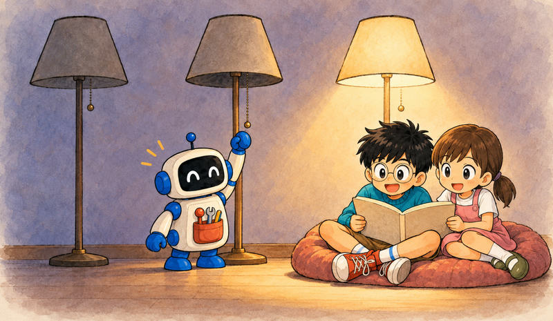
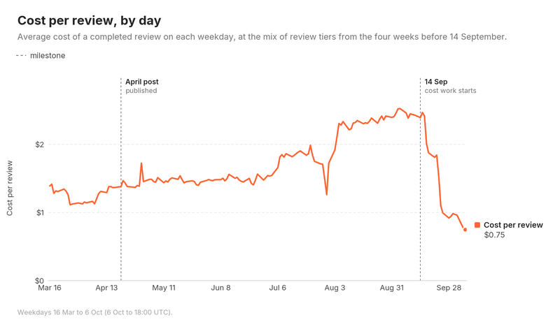
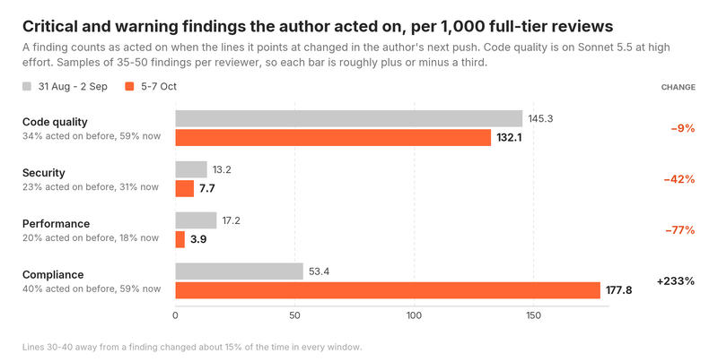

Feature 06 · ARTICLE · 2026 10
Cutting Our Inference Bill by 68%
By the end of August, an average review from our AI code reviewer cost about $2.46, up from $1.19 in April, with no significant architectural change. In mid-September we set our agents to find where the tokens were going and cut them. With code quality at high effort, a review now costs $0.77, down 68% from the $2.43 it averaged over our two most expensive weeks, and the median review takes 1m 32s instead of 4m 09s. About 40% of the savings came from the reviewer’s code, and the rest from experimenting with models and effort. Code quality at high effort still finds about as many real problems as before. Performance lost real findings at medium effort, and security may have.

How a review doubled in cost

A small part of the rise is that more reviews landed in the most expensive tier, 59% in March and 65% in August. Most of it came from model changes.
In early August we moved every reviewer onto Anthropic models, which performed better in our evals on this workload. Cost per job went from $1.38 to $2.03. The cache hit rate rose from 85.7% to 97%, but tokens per review tripled, from 0.91 million to 2.99 million. A high hit rate on three times as many tokens still costs a lot more.
Where the tokens went
Before we started, output was about 23% of spend, cache writes 43%, and cache reads 34%. Most of the money went on context the model had already seen or was about to see again.
Anthropic’s prompt cache stores prefixes, and only where a cache breakpoint ends one. Writing costs 1.25 times the input price, reading 0.1 times, and an entry expires after five minutes unless something reads it. So we had two jobs: make each session’s first request read from the cache, and make each session use fewer calls.
Sharing one prefix
From September 14 we recorded each reviewer’s first-call token usage and a hash of the first system block as sent. The first request found a cached prefix only 14% to 26% of the time, although its 11k to 21k tokens of tools and agent prompt were identical in every repository.
OpenCode v1 built one block: our agent prompt, then an environment section with the working directory and date, with the only breakpoint at the end. The shared part was never stored on its own. On September 16 we added a marker to every agent prompt and a plugin hook that split the block there, giving the shared half its own breakpoint. To keep it shared, we disabled the skills list and froze tool descriptions. First-request cache reads rose to 91% to 99.5%.
Fewer calls
Changes on September 21 and 23 took about $0.20 off every review together. Among them:
Sub-reviewers could see the tool that posts the final comment. In 57% to 76% of sessions they called it, were rejected, and spent a call recovering. We removed it.
In 64% of the code quality reviewer’s turns, the model read a single file. Reviewers now read the shared context and all their patches in the first response, up to 150 KB.
About two-thirds of jobs are re-reviews, so reviewers with nothing new to look at are skipped.
GitLab’s Kubernetes executor doesn’t signal cancelled jobs; 358 of 446 sampled kept running. Jobs now check their status every 15 seconds.
The most involved change: the code quality, security, and performance reviewers now send identical first requests, with each reviewer’s own instructions after the shared part. A cache entry can’t be read until the response that wrote it starts streaming, so the second and third reviewers wait up to 20 seconds for the first. It slows them slightly and saves about nine cents per reviewer.
Models and effort
Splitting the period at every change, code accounts for $0.65 of the $1.67 drop, and model and effort changes for $1.06. Each step compares weekday hours before and after a change, so this isn’t a statistically sound controlled experiment.
In a randomized split, Opus 5.5 at medium showed no measurable change in outcomes or critical findings against Opus 5, so we switched. High effort cost more without a meaningful increase in findings. Lower per-token price explains only about $0.20 of the drop; the rest is fewer tokens. Since early September, cache reads per review are down 82%, writes 54%, and output 67%.
On October 3 we split every Sonnet reviewer 50/50 between Sonnet 5 and 5.5. Same per-token price, but 5.5 was 62% cheaper per run for code quality, 58% for performance, and 47% for security, with about as many critical and warning findings. On October 5 we moved all of them. At medium effort the code quality reviewer makes 1.7 calls per run instead of 6.2, and more than half its runs open no other file. We worried this made reviews shallower. In a medium-versus-high split, high effort cost 61% more per run after one day and posted 58% more critical and warning findings, about two cents per review. We’re moving code quality to high, and the costs here assume it.
Review quality

At high effort, code quality posts 40% fewer critical and warning findings than in late August; security and performance, at medium, post 56% and 71% fewer. That alone doesn’t say whether real problems are missed or noise is cut, so we checked two ways.
First, we counted a finding as acted on if its lines changed in the author’s next push, against a baseline of about 15% for lines 30 to 40 away. Authors acted on 34% of code quality’s serious findings before, and 59% now. Acted-on findings per 1,000 reviews are about the same, 132 against 145, within the margin of error. Across all four reviewers they went from 229 to 321.
Second, two models from different providers judged a blinded sample of 657 findings, with a third settling disagreements. Most of what disappeared was minor, duplicate, or unverifiable. Important findings per review went from 0.28 to 0.30, and the intervals overlap. Findings rated more severe than deserved fell from 0.46 per review to 0.14, a 70% drop and the clearest result.
It depends on the reviewer. Code quality at high effort lost mostly noise and inflated severity. At medium it led to roughly a quarter as many acted-on findings as at high. Performance lost real findings, about one fewer important finding every 24 full-tier reviews. Security fell by about a quarter, not statistically significant. Testing both at high is next.
Neither method is perfect. A changed line shows the author did something, not that the finding was right; the judges are models; each group holds only 35 to 66 findings; the “now” window is a day long. Still, the two agree, and neither suggests code quality finds fewer real problems.
Where this leaves us
The biggest single saving came from checking what actually reached the provider on each session’s first request and ordering those messages as consistently as possible across commits, merge requests, and repositories. The rest came from relentless experiments with models and effort, with any preconceived bias for particular models put aside. Lower cost didn’t automatically mean worse quality, but it didn’t automatically mean fine either. If you run agents at volume, check first whether each session’s first request reads from the cache, and whether your reviewers still find real problems at the effort you’re paying for.